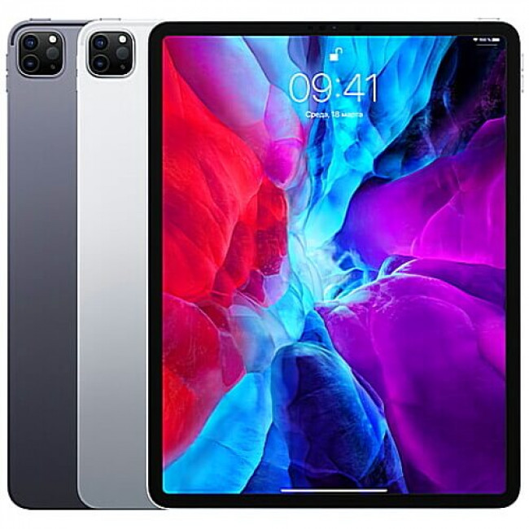

iphone 11 pro
ipad pro
iPad (МФА: [ˈaɪˌpæd], от англ. pad — блокнот; устоявшаяся практическая транскрипция — «Айпад») — планшет, выпускаемый компанией Apple. Первая версия планшета представлена на презентации в Сан-Франциско Стивом Джобсом 27 января 2010 года.
